Foco B2B · Farinhas de milho e de rosca para empanamento.
Paraná · Brasil
—
Confidencial · Uso interno e parceiros
Tradição que
moe há 56 anos.
A Baptistella nasceu em 1969 no Paraná como uma indústria familiar de farinha de milho. Começamos pequenos, atendendo padarias e mercearias da região, e crescemos no ritmo do agronegócio brasileiro.
Hoje, somos referência em insumos para empanamento e misturas para panificação, abastecendo desde pequenos transformadores e salgaderias artesanais até grandes redes de food service, supermercados com rotisserie interna e indústrias alimentícias em todo o Brasil.
Continuamos sendo uma empresa familiar — e isso importa. Significa decisões de longo prazo, relação direta com o cliente e o cuidado de quem coloca o nome da família em cada saco que sai da fábrica.
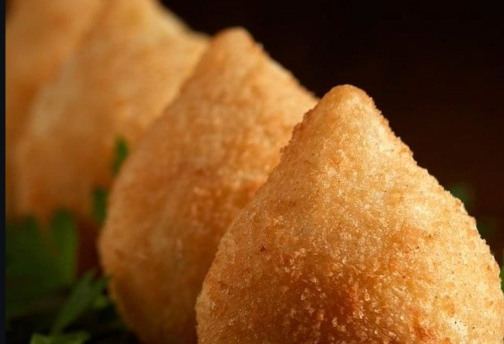
Quem somos
em uma frase.
Promessa de marca
Toda vez que você abrir um saco Baptistella, vai encontrar a mesma granulometria, a mesma cor e o mesmo desempenho que encontrou no saco anterior. Isso não é detalhe. É o que sustenta a operação do nosso cliente.
O que NÃO somos
Não somos uma commodity. Não vendemos farinha "qualquer". Não somos a marca mais barata da prateleira — somos a que não dá problema na linha e rende mais por quilo.
Quatro valores
que cabem no saco.
Princípios que guiam decisões — da produção ao atendimento, do planejamento à entrega.
01 · Palavra dada
Cumprimos prazo, especificação e contrato.
Empresa familiar honra acordo. Quem assina aqui é quem produz.
02 · Mão na massa
Conhecemos a fábrica do cliente.
Resolvemos no chão de produção, não no e-mail. Time técnico que entra na linha.
03 · Padrão acima de tudo
Consistência de lote a lote é inegociável.
Cor, granulometria, umidade — três variáveis controladas em cada batelada.
04 · Crescer junto
O salgadeiro de hoje pode ser a indústria de amanhã.
Atendemos os dois extremos com a mesma seriedade — e estamos juntos quando um vira o outro.
Posicionamento
B2B.
Como a marca se apresenta no mercado de transformação de alimentos — do pequeno salgadeiro ao supermercado com rotisserie e à grande indústria. O que dizemos, o que entregamos, e onde estamos diferentes da concorrência.
Onde a Baptistella
fica no mercado.
Para quem transforma alimento no Brasil — do salgadeiro de bairro ao supermercado com rotisserie e à grande indústria — a Baptistella é a fábrica familiar paranaense de farinhas de milho e de rosca para empanamento que entrega padrão industrial sem perder a relação próxima. Diferente das marcas commodity, somos parceiros técnicos: você liga, a gente atende — e o produto chega igual ao último pedido.
Para quem falamos.
Três portes, três conversas, uma só promessa.
Quatro linhas,
uma promessa.
Cada linha tem uma cor, uma aplicação e um público. A cor da embalagem ajuda o operador da fábrica do cliente a identificar o produto certo no estoque em 2 segundos.
Linha 01 · Empanamento clássico
Farinha
de Milho
Brasil
A farinha de milho clássica, base para coxinha, kibe e milanesa caseira. Granulometria padrão, cor amarela natural, rendimento alto.
Linha 02 · Liga e pré-empanamento
Liganex
Mistura para pré-empanamento. Liga sem ovo, otimiza rendimento na linha e segura a farinha de rosca no choque térmico.
Linha 03 · Empanamento premium
Empanex
Farinha de rosca premium, granulometria controlada para empanamento crocante. Padrão indústria — usada por redes nacionais e supermercados.
Linha 04 · Misturas prontas
Batpronto
Misturas prontas para pães, bolos, salgados de massa. Inclui versões sem glúten e sem lactose para ampliação de mix do cliente.
O que nos faz
a melhor escolha.
Os 4 territórios da Baptistella
- Padrão industrial. Granulometria controlada, cor estável, performance previsível em fritura por imersão e em forno.
- Relação direta. Time comercial técnico que entra na fábrica do cliente e ajusta a aplicação.
- Escala adaptável. Atendemos do salgadeiro com 25 kg/mês ao frigorífico com pallet semanal.
- Tradição com modernização. 56 anos de operação, mas com mix novo (Liganex, sem glúten, sem lactose).
Posição vs. mercado
| Atributo | Commodity | Baptistella |
|---|---|---|
| Padrão lote a lote | Variável | Constante |
| Atendimento | Distribuidor | Direto da fábrica |
| Suporte técnico | Não tem | Inclui |
| Mix de produto | Genérico | Especializado |
| Customização | Não | Sim, a partir de volume |
| Rastreabilidade | Limitada | Total |
"Padrão de indústria,
atendimento de família."
Esta é a tensão criativa que a marca resolve: rigor técnico de uma indústria séria + proximidade humana de uma empresa familiar.
Sistema visual.
Logotipo, paleta, tipografia e fotografia. O conjunto de ativos visuais que torna a Baptistella reconhecível em qualquer ponto de contato — do saco empilhado no estoque do cliente ao post no LinkedIn.
A assinatura
oficial da marca.
A marca Baptistella é um logotipo manuscrito em estilo script, acompanhado da tagline "alimentos · desde 1969".
O traço script remete à tradição familiar e ao trabalho artesanal — qualidade que a marca herdou de 1969. A cor laranja institucional conecta diretamente com o produto final: o dourado do empanado frito.
Especificações
- Cor primária: Laranja institucional
#DF7A1E - Margem mínima: 1× a altura da letra "B" em todos os lados
- Tamanho mínimo digital: 120 px de largura
- Tamanho mínimo impresso: 25 mm de largura
Versões para cada contexto
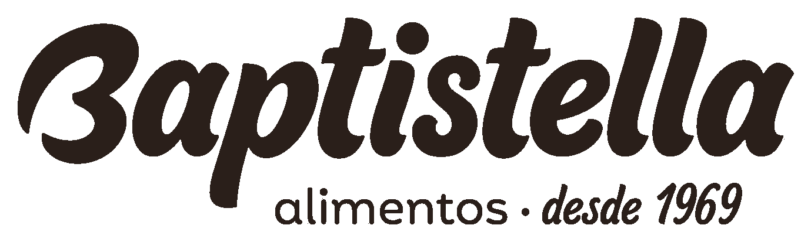
Escuro / amarelo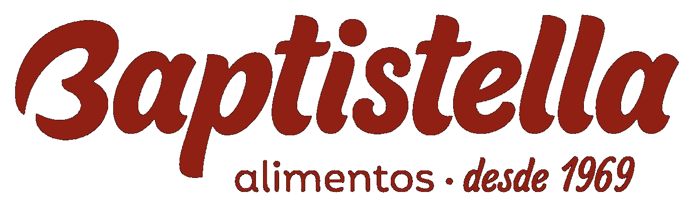
Vermelho / begeA paleta que
vira indústria.
Uma paleta quente, terrosa e brasileira — saída do milho moído e do empanado frito. É funcional: cada cor tem uma função, uma linha de produto, uma posição na hierarquia.
Por que laranja-marrom e não vermelho-amarelo genérico: o mercado de alimentos no Brasil é dominado pelo combo vermelho+amarelo (fast food, marca de tempero, óleo de cozinha). É default, é genérico, não sustenta posicionamento. A paleta Baptistella resolve isso conectando diretamente ao produto final — a cor exata do empanado dourado, do nugget frito, do risólis pronto.
"A cor da Baptistella é a cor do produto que sai certo da fritadeira do cliente."
Cores principais · Sistema oficial
Pantones registrados na identidade da Baptistella. Cada uma carrega uma função específica — institucional, linha de produto ou apoio — e juntas constroem o reconhecimento visual da marca em qualquer ponto de contato.
Cor secundária de apoio
Família terrosa · Paleta expandida
Tons complementares para uso em peças longas (relatórios, apresentações, posts) onde a paleta principal precisa de variações sutis sem perder identidade.
Proporção sugerida em peças institucionais
~60% creme/papel · 25% laranja institucional · 15% marrom — outras cores entram como acentos pontuais ou nas linhas de produto.
Sistema
tipográfico.
Duas famílias trabalhando juntas: Fraunces (serif itálica) carrega a tradição manuscrita do logotipo. Inter (sans geométrica) entrega legibilidade industrial em fichas técnicas, embalagens e documentos B2B.
Substituição quando indisponível
Quando Fraunces ou Inter não estiverem disponíveis (e-mail, sistema interno, parceiros sem licença), use Georgia (substituto de Fraunces) e Helvetica Neue ou Arial (substitutos de Inter).
Como a marca
fotografa o mundo.
A fotografia Baptistella mostra o que a farinha vira: coxinha dourada, nugget crocante, frango empanado, croquete recém-frito. O produto final é o herói. Closes fotográficos com luz quente, vapor sutil, textura visível.
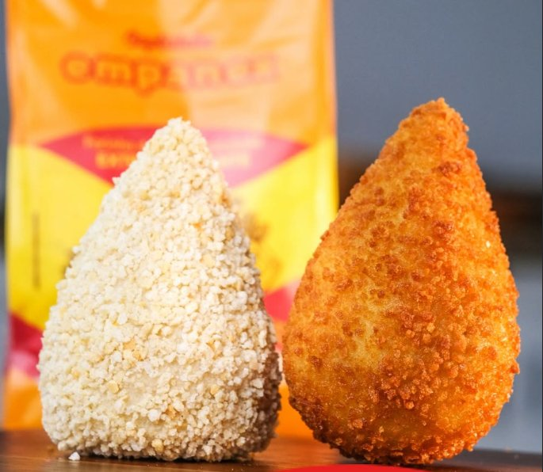
Banco de produto · territórios visuais
Coleção de imagens que devem aparecer com frequência em LinkedIn, Instagram, site, apresentações comerciais e fichas técnicas. Hero shot do que a Baptistella ajuda a produzir.
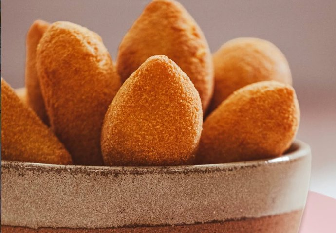
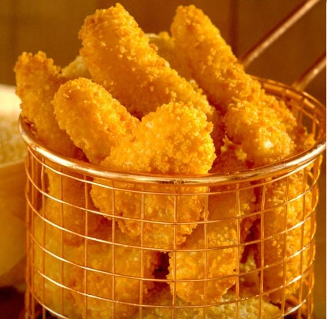
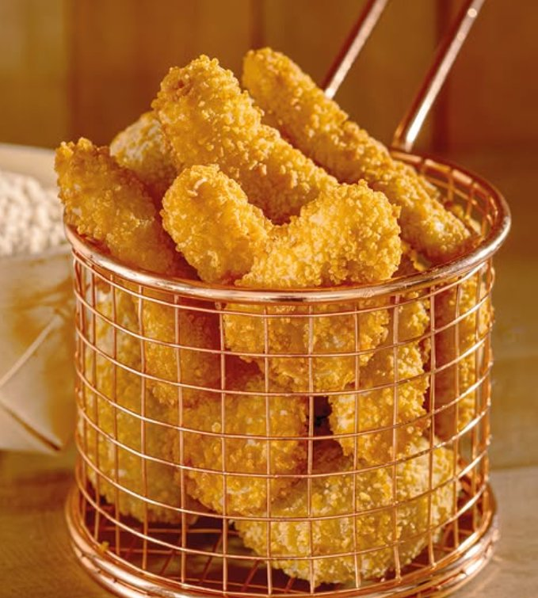
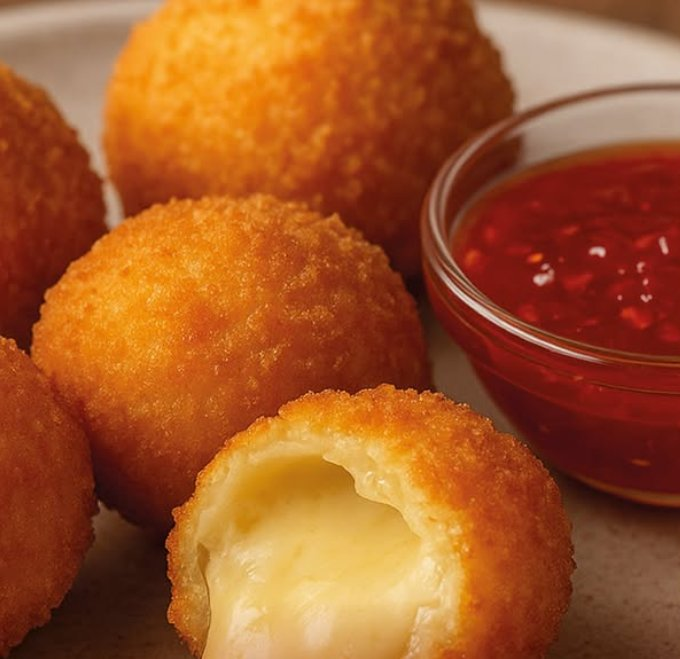
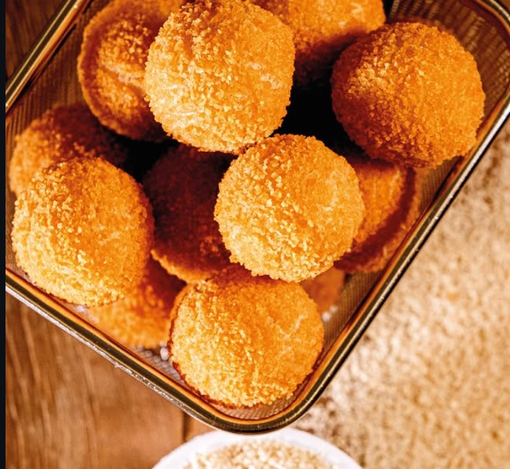
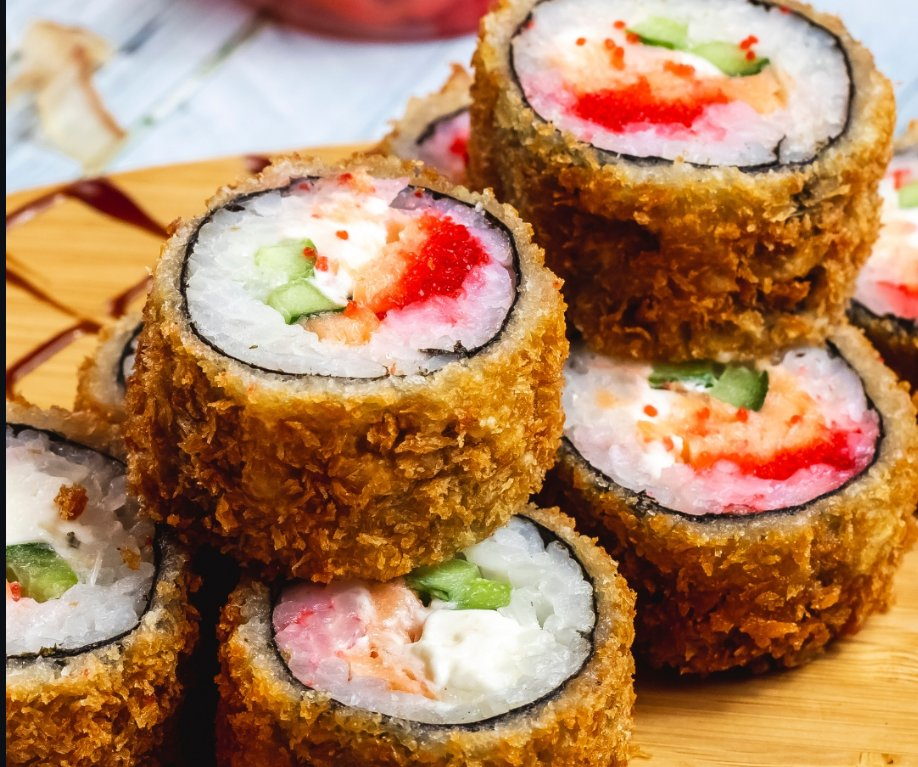
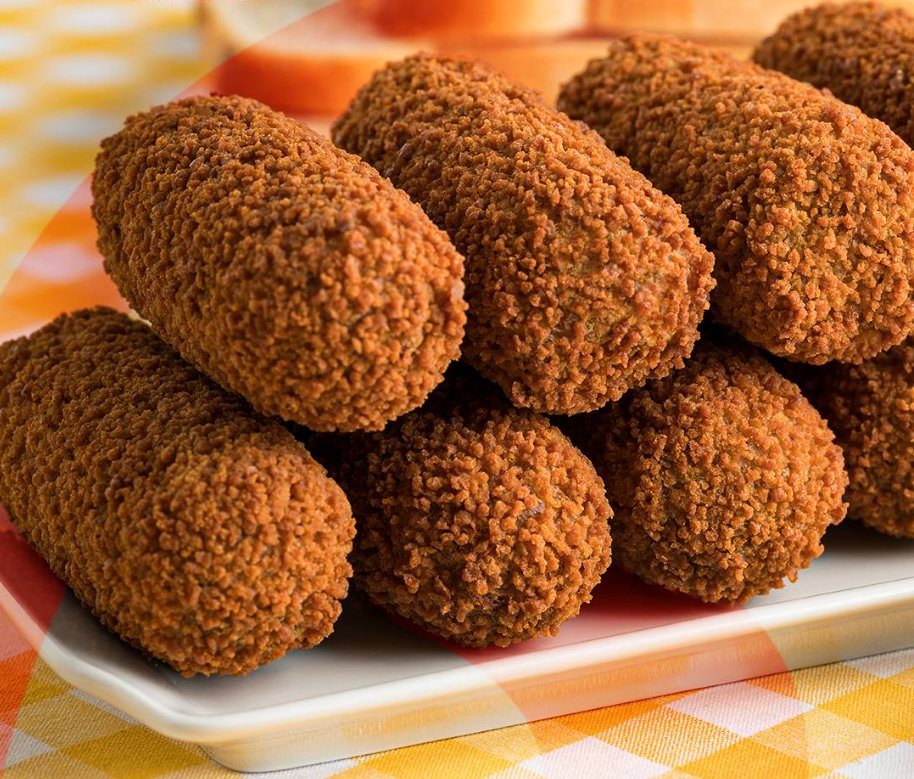
Direção de arte · luz e composição
- Iluminação quente — luz lateral suave, dourado dominante
- Vapor visível — produto recém-frito, não estático
- Textura do empanamento — close suficiente para ver o grão da farinha de rosca
- Background sóbrio — madeira escura, prato de cerâmica, cesta de fritadeira
- Sem elementos cenográficos exagerados — nada de alfaces decorativas, ervas dispersas, pratos coloridos
O que evitar
- Imagens de banco genérico de food
- Iluminação azulada ou neutra fria
- Composições "publicitárias-falsas" com produto plástico
- Coxinhas pálidas, nuggets pré-prontos sem dourar
- Produto em embalagem de supermercado (somos B2B, não end-consumer)
- Fundos brancos de e-commerce
"Se a foto não dá vontade de comer, ela não fala da Baptistella."
Voz e aplicação.
Como a marca soa em cada canal — do bate-papo com o salgadeiro à ficha técnica para o gerente de PCP. Tom, vocabulário, exemplos e checklist final antes de publicar qualquer peça.
Como a gente fala.
Falamos com quem está no chão da fábrica e com quem assina contrato no escritório. Dois tons na mesma voz — o brand book deixa claro quando usar cada um.
Mão na massa.
Para salgadeiros, gerentes de produção, compradores técnicos, posts de Instagram, embalagem.
Características
- Frases curtas. Verbos no presente.
- Vocabulário de quem trabalha com a farinha
- Resultado primeiro, processo depois
- Pode usar gíria de fábrica ("rende", "puxa", "encorpa")
Especificação técnica.
Para grandes contas, propostas comerciais, LinkedIn corporativo, documentação técnica, RFPs.
Características
- Estruturada, com dados e parâmetros
- Vocabulário de food science e supply
- Atributos mensuráveis: granulometria, umidade, rendimento
- Sem floreio. Sem adjetivo gratuito.
"Toda frase Baptistella deve poder ser entendida tanto pelo dono do salgadeiro quanto pelo gerente de PCP de uma indústria. Se uma das duas pontas trava, reescreva."
Palavras que usamos
e palavras que evitamos.
USE · Vocabulário Baptistella
- Padrão / padronizado — atributo central
- Lote — vocabulário de fábrica, gera confiança
- Rendimento — o que o cliente quer ouvir
- Crocância / dourado — sensoriais legítimos
- Linha de produção — fala com B2B real
- Parceiro / parceria — não "cliente"
- Granulometria — termo técnico que diferencia
- Família / familiar — sustenta a tradição
- 56 anos / desde 1969 — credencial sempre presente
- Resultado no produto final — promessa-âncora
- Rotisserie — fala com supermercado
EVITE · Clichês e armadilhas
- "Soluções inovadoras" — vazio, todo mundo diz
- "Excelência" — clichê corporativo, prove com fato
- "Premium" sozinho — só se houver atributo concreto junto
- "Tecnologia de ponta" — o cliente quer saber o que muda na linha dele
- "Sabor inigualável" — adjetivo sem prova
- Linguagem fofa / diminutivos — somos B2B, não DTC
- "A gente entrega muito mais que farinha" — não, a gente entrega farinha. Muito boa.
- Anglicismos desnecessários — "compliance", "core business" só quando o público realmente usa
- Emoji em excesso — máximo 1 por post LinkedIn
- "Família X" sem ser a sua — não chame o cliente de "família Baptistella" gratuitamente
LinkedIn como
canal-âncora B2B.
Decisores do nosso público — gerentes de PCP, donos de salgaderia, compradores de food service, chefs de rotisserie em supermercado, diretores de indústria — estão no LinkedIn. Não estão lá para ver bolinho frito bonito; estão lá para encontrar parceiros confiáveis.
Estratégia editorial em 4 pilares
Bastidores da fábrica
Linha de produção, controle de qualidade, time, equipamento. Mostra que operamos no padrão das maiores.
Conteúdo técnico
Granulometrias, dicas de empanamento, controle de umidade, troubleshooting. Posiciona como expert.
Cliente e case
Salgadeiro que cresceu, supermercado que padronizou rotisserie, indústria que escalou. História do cliente — não auto-promoção.
Marca e cultura
56 anos de história, time, presença em feiras (Anutec, Apas, Fispal), propósito.
Exemplos práticos · como um post Baptistella se parece
Por que sua coxinha solta a farinha na fritura?
Na maioria dos casos não é o óleo nem o ponto da massa. É a granulometria da farinha de rosca.
Grão muito fino: a farinha não "agarra" no pré-empanamento. Muito grosso: cai antes da crosta selar. O ponto certo está entre 0,8 mm e 1,2 mm — e muda se o produto vai para fritura imediata ou congelamento.
No comentário, a tabela que usamos com nossos parceiros para escolher granulometria por aplicação.
crocância garantida.
56 anos. Hoje saiu o lote 87.412 da nossa farinha de milho.
A foto é da Cleuza, com a Baptistella desde 1998. Ela acompanha o controle de cor de cada batelada — quando o tom do milho moído sai do nosso padrão, mesmo que pareça igual a olho destreinado, ela barra.
Padrão industrial não vem da máquina. Vem de quem opera a máquina.
A gente costuma dizer que vende farinha. Na real, vende a certeza de que o saco de hoje vai ser igual ao da semana passada.
o padrão.
A marca aplicada
no mundo real.
Mockups oficiais do manual de marca: como a identidade Baptistella aparece em papelaria, identificação de equipe, ambientes de feira e EPIs de fábrica. Referências para qualquer peça nova respeitar.
Papelaria institucional.
Cartão de visita, papel timbrado e elementos de escritório. Laranja institucional dominante, tinta forte para texto, e o símbolo "B" em fita aplicada como elemento gráfico de assinatura.
Especificações
- Cartão: laranja institucional, fundo, logotipo branco
- Papel timbrado: A4, tinta forte com bloco laranja lateral
- Fita decorativa: repetição do símbolo "B" em laranja sobre amarelo
- Acabamento: offset 300g, laminação fosca
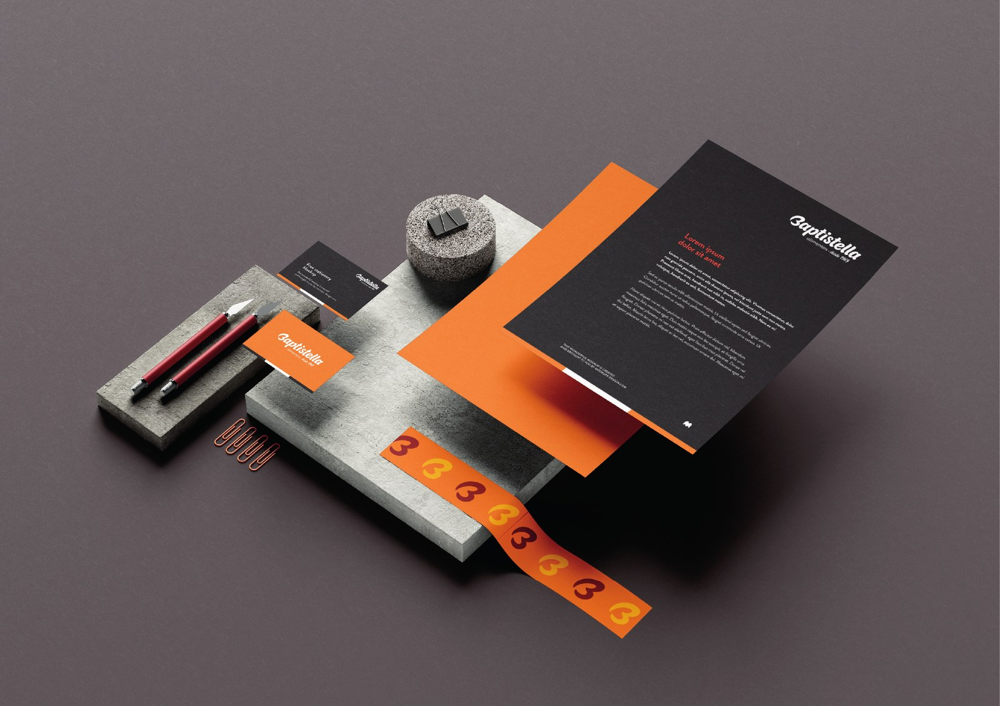
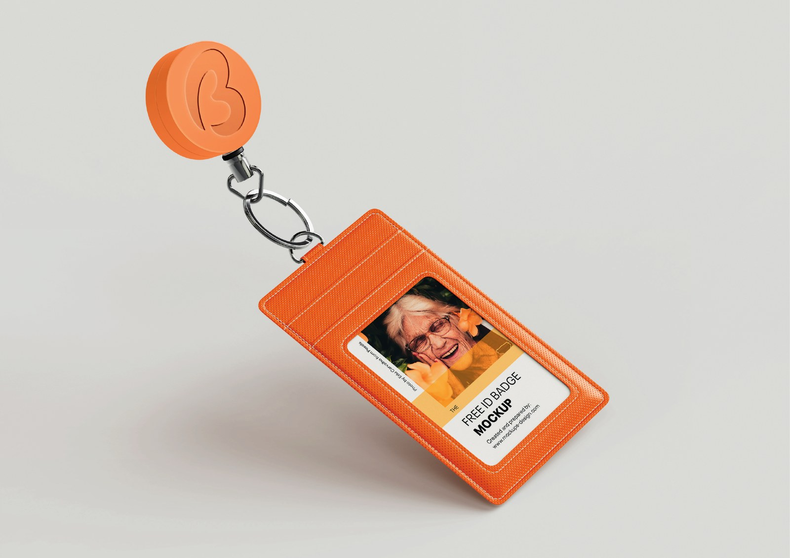
Identificação de equipe.
Crachá retrátil com chaveiro magnético em forma de "B" laranja. Uso obrigatório em fábrica, escritórios e visitas técnicas ao cliente. Identifica quem é Baptistella em qualquer ambiente.
Especificações
- Capa: sintético laranja institucional, costura aparente
- Cordão / chaveiro: retrátil com "B" em borracha vulcanizada
- Identificação: foto + nome + matrícula + cargo
- Validade: impressa no verso, atualizada anualmente
Backdrop e stand de feira.
Painel para feiras setoriais (Anutec, Apas, Fispal, Fenarroz). Combinação de fotografia de produto final, símbolo "B" gigante e a ilustração do milho em traço como assinatura institucional.
Especificações
- Painel A: foto de coxinha em alta resolução + B amarelo de fundo
- Painel B: laranja institucional + logotipo + ilustração do milho
- Estrutura: alumínio Octanorm, lona PVC com impressão em alta
- Iluminação: spots dourados para realçar o produto na foto
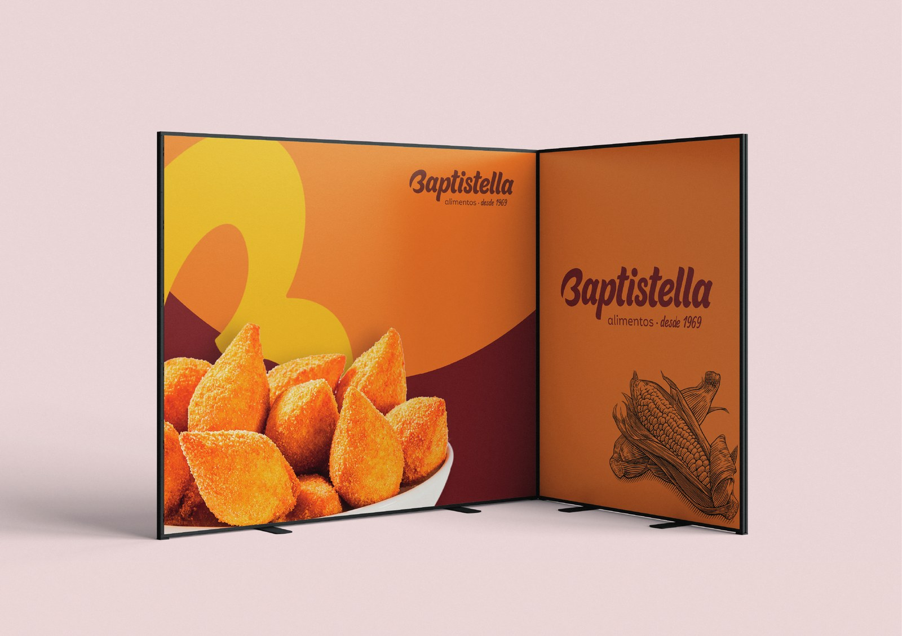
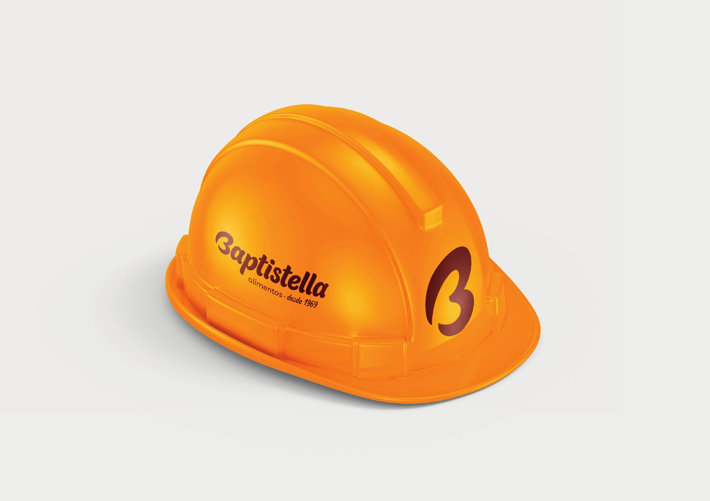
EPIs e identificação industrial.
Capacetes de segurança, uniformes e identificação visual da operação. Laranja institucional dominante (também por norma de visibilidade NR-6), logotipo lateral e símbolo "B" como marca d'água frontal.
Especificações
- Capacete: ABS laranja com logo em vinil marrom (lateral) + B (frente)
- Camisa polo / uniforme: bordado branco sobre tecido laranja
- Empilhadeiras / caminhões: laranja com B gigante na lateral
- Sinalização interna: bege com tipografia em tinta forte
"A marca tem que aparecer onde o cliente vê a Baptistella trabalhar: no caminhão que entrega, no capacete da fábrica, no estande de feira, no cartão que sai do bolso do vendedor."
Antes de publicar
qualquer peça.
Lista de verificação rápida — embalagem, post, anúncio, apresentação, e-mail, brinde. Se uma resposta for "não", reescreva.
Identidade
- Logotipo aplicado em sua versão correta (cor / branco / monocromático)?
- Margem mínima de proteção respeitada?
- Cores dentro da paleta institucional?
- Tipografia Fraunces + Inter em uso (ou substitutas válidas)?
- Cor de linha aplicada corretamente para o produto referido?
- Tagline "alimentos · desde 1969" presente onde cabe?
Mensagem
- A peça transmite "padrão de indústria, atendimento de família"?
- O tom está adequado (Operação ou Indústria)?
- Evitou clichês ("excelência", "soluções inovadoras")?
- Tem prova concreta (número, ficha, atributo) onde fizemos uma promessa?
- Funciona para os dois extremos (salgadeiro e gerente de PCP)?
Imagem
- Foto pertence a um dos dois territórios (indústria / produto final)?
- A imagem é da nossa operação ou de banco genérico? (Priorizamos a primeira opção.)
- A iluminação respeita a paleta?
- Se há produto final, ele está dourado e crocante?
- Se há fábrica, transmite escala e organização?
Para LinkedIn especificamente
- Primeiro parágrafo prende a atenção? (Sem clichê de abertura.)
- Tem estrutura de leitura (parágrafos curtos, espaçamento)?
- Termina com pergunta ou CTA específico?
- Hashtags relevantes (até 4) ao final?
- Imagem na proporção 1:1 ou 4:5 com a paleta?
Ativos para
baixar e usar.
Logotipo em todos os formatos, paleta em padrões compatíveis com Adobe / Figma / Office, e templates rápidos para começar.
{kind=link}
{kind=link}